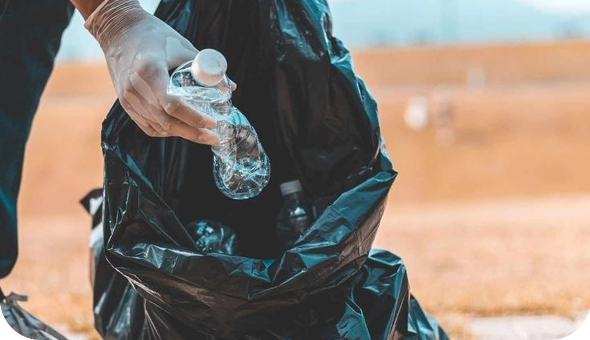

Form Laporan Sampah
Isi informasi berikut untuk melaporkan sampah
Foto Sampah
Klik atau drag foto ke sini
PNG, JPG max 10MB
Isi lokasi secara manual sesuai titik temuan
Menganalisis gambar...
AI Processing
Pelaporan Sampah
Unggah foto sampah, isi lokasi secara manual, dapatkan klasifikasi AI, dan pilih aksi terbaik untuk menangani laporanmu.
4,891
Total Laporan
+320
Warga Aktif
92%
Terselesaikan
Isi informasi berikut untuk melaporkan sampah
Klik atau drag foto ke sini
PNG, JPG max 10MB
Isi lokasi secara manual sesuai titik temuan
Menganalisis gambar...
AI ProcessingSistem menganalisis laporanmu dan memberikan rekomendasi tindakan berdasarkan kategori, volume, lokasi, dan tingkat risiko.
Jenis sampah
—
Volume
—
Risiko
Rendah
Urgensi
—
Rekomendasi AI
—
Lokasi
—
Profil sampah
Saran tindakan
Prioritaskan pengumpulan di satu titik aman
Kumpulkan lalu bawa ke TPS terdekat
Laporkan bila area berbahaya atau sulit dijangkau
Pratinjau reward
+200
Poin jika aksi mandiri selesai
Pilih tindakan yang paling sesuai berdasarkan hasil analisis
Cocok untuk risiko rendah dan area yang aman ditangani langsung.
Reward
+200
Panduan AI
Gunakan sarung tangan, kumpulkan ke satu titik aman sebelum dibawa ke TPS.
Durasi tugas
Estimasi 30 menit untuk penyelesaian
Validasi hasil
Unggah foto akhir untuk memverifikasi area sudah bersih
Disarankan jika butuh tindak lanjut petugas atau tingkat risikonya lebih tinggi.
Reward
+50
Urgensi penanganan
Skor urgensi dihitung otomatis dan diteruskan ke petugas lokal.
Distribusi laporan
Sistem mengarahkan laporan ke petugas atau dinas terkait.
Pelacakan progres
Status penanganan bisa dipantau langsung dari sistem
Pantau progres penanganan sampah secara real-time dari laporan yang sedang diproses.
Dilaporkan 12 menit lalu | Kategori Plastik | Volume Sedang
Laporan berhasil dikirim oleh pengguna beserta foto dan informasi pendukung untuk diproses oleh sistem.
Sistem AI menganalisis kategori sampah, volume, lokasi, dan tingkat risiko untuk menentukan rekomendasi terbaik.
Laporan sedang ditindaklanjuti. Penanganan dilakukan sesuai hasil analisis AI dan kebutuhan di lapangan.
Proses penanganan telah selesai. Laporan ditutup dan status akhir tercatat di dalam sistem.